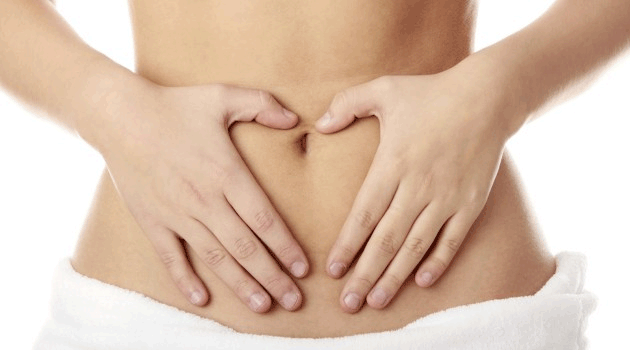

Як очищена вода допомагає схуднути: думка вчених та поради
Багато хто шукає секретні дієти та дороговартісні добавки для зниження ваги, забуваючи про найпростіший і найдоступніший інструмент — правильний питний режим. Науково доведено: вживання якісної очищеної води значно прискорює процес схуднення.
Як вода впливає на спалювання жиру?
Механізм дії води в процесі зниження ваги ґрунтується на кількох біологічних процесах:
1. Активація метаболізму (Термогенез)
Коли ви п'єте воду (особливо прохолодну), ваш організм витрачає додаткову енергію, щоб нагріти її до температури тіла. Це збільшує кількість спалених калорій навіть у стані спокою.
2. Зниження відчуття голоду
Мозок часто плутає сигнали спраги та голоду. Багато хто з нас переїдає просто тому, що організм хоче пити. Склянка чистої води за 20–30 хвилин до їжі допомагає заповнити об'єм шлунка та знизити апетит.
3. Виведення продуктів розпаду
У процесі спалювання жиру в організмі утворюються токсини та продукти розпаду. Якщо води недостатньо, ці речовини затримуються, спричиняючи набряки та уповільнюючи метаболізм. Очищена вода ефективно «вимиває» все зайве.
Чому саме очищена вода, а не звичайна?
Звичайна водопровідна вода може містити надлишок солей, які сприяють затримці рідини в організмі (створюючи тим самим набряки). Очищена вода, що пройшла через систему зворотного осмосу, не містить зайвих домішок, що дає змогу організму позбуватися зайвої ваги швидше й легше.
Проста схема пиття для схуднення:
- Склянка води одразу після пробудження. Запускає ШКТ і пробуджує організм.
- Склянка води за 30 хвилин до кожного прийому їжі. Контролює апетит.
- Заміна солодких напоїв на чисту воду. Це прибирає до 300–500 «порожніх» калорій на день.
- Вода під час фізичних навантажень. Прискорює виведення токсинів після тренування.
Зробіть перший крок до ідеальної фігури з Crystal Water.
Чиста вода — це найдешевший і найефективніший помічник у схудненні. Замовляйте доставку очищеної води в Бровари та Київ і відчуйте легкість уже за тиждень.
Замовити воду для здоров'я